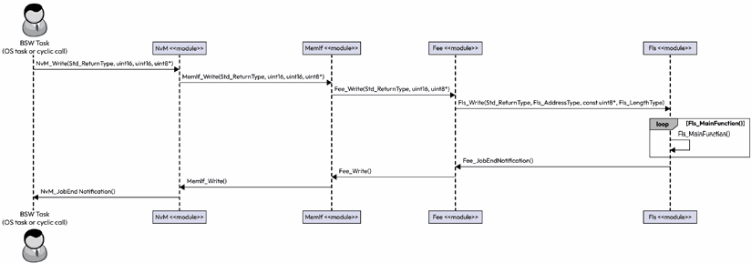
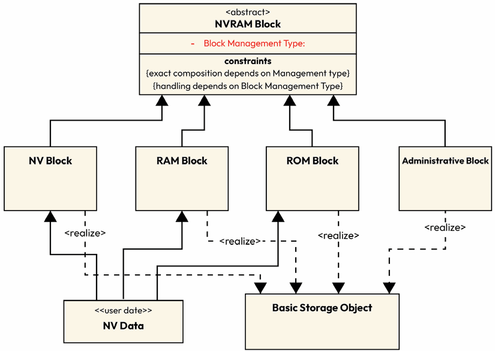
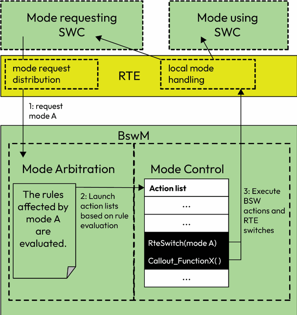
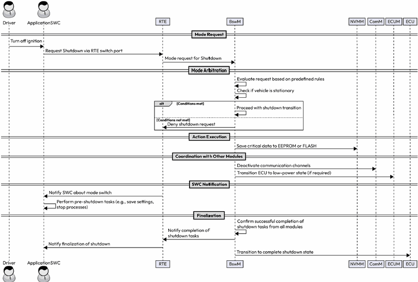

第9章 内存与模式管理
AUTOSAR Fundamentals and Applications — Hossam Soffar 著 | AI 辅助翻译
AUTOSAR 中的内存栈
将内存栈（Memory Stack）想象为图书馆的存储系统：每本书代表一段需要存储、编目和高效检索的数据。在 AUTOSAR 中，内存栈就是管理这个系统的图书管理员，确保关键信息在电源周期和系统重置后得以保留。
在 ECU 中，通常需要保存车辆设置、标定参数、诊断故障码（DTC（Diagnostic Trouble Code，诊断故障码），Diagnostic Trouble Code）以及其他对正常运行不可或缺的数据。BSW 内置了 NVM 栈，可使用 EEPROM 或 Flash 存储器进行存储。

图 9.1 – 内存栈架构
各层模块详解
服务层——NvM（NVRAM Manager，NVRAM 管理器）：内存栈的核心组件，提供管理 NVM 操作的标准化接口和服务。关键功能包括数据块管理、读写操作和错误处理。

图 9.2 – 内存栈模块交互
抽象层：
- FEE（Flash EEPROM Emulation，Flash EEPROM 仿真）：在 Flash 存储器中模拟 EEPROM 行为
- EA（EEPROM Abstraction，EEPROM 抽象）：抽象外部 EEPROM 硬件，提供标准化接口
- MemIf（Memory Abstraction Interface，存储器抽象接口）：抽象底层 FEE 和 EA 模块的统一接口，提供读写擦除和块管理任务以及磨损均衡

图 9.3 – 基本存储对象定义
MCAL 层：Fls（Flash Driver）和 Eep（EEPROM Driver）直接控制硬件存储器。
NVM 使用流程

图 9.4 – 系统中 NVM 使用抽象序列图
SWC → RTE → NvM → MemIf → FEE/EA → Flash/EEPROM 驱动 → 物理存储器。数据可以在运行时立即写入，也可以延迟直到 ECU 关闭时才批量写入。可配置的设置控制数据何时以何种方式写入和读取——数据变更后立即写入还是延迟到系统关闭，启动时自动检索还是仅在特定请求时读取。
模式管理
BSWM（BSW Mode Manager，BSW 模式管理器）

图 9.5 – BSWM 模式请求处理与控制
BSWM 基于规则评估系统条件并触发模式切换。它接收来自其他模块的模式请求，应用预定义的评估规则，并触发相应的模式控制动作。

图 9.6 – BSWM 模式控制评估
每条规则包含"模式条件"（Mode Condition）和"模式控制"（Mode Control）两部分。当条件评估为 TRUE 时，执行对应的模式控制动作。

图 9.7 – BSWM 规则执行流程
ECUM（ECU State Manager，ECU 状态管理器）：控制 ECU 的整体状态转换——启动（Startup）、运行（RUN）、关闭（Shutdown）和休眠（Sleep）。启动序列包括初始化 BSW 模块、初始化 OS 和启动 RTE。
安全 ECU 关闭用例

图 9.8 – 安全 ECU 关闭序列图
当检测到电压过低时，BSWM 触发安全关闭流程：通知 ECUM → 各模块将关键数据写入 NVM → 确认数据写入完成 → 系统安全关机。这确保在意外断电情况下重要数据不会丢失。
本章小结
本章探讨了 AUTOSAR 内存栈的结构——NvM、MemIf、FEE、EA、Fls 和 Eep 等模块如何在各层协同工作以在电源周期中保持数据完整性和可用性。模式管理部分讨论了 BSWM 基于规则的模式切换逻辑、ECUM 在管理 ECU 生命周期中的角色，以及电压过低时的安全关闭序列。
思考题
- ECU 内存栈的各个模块及其角色是什么？
- FEE 和 EA 在 AUTOSAR 中的区别？
- BSWM 如何基于规则触发模式切换？
- 描述安全 ECU 关闭的完整流程。
第10章 总结与知识拓展用例
本章作为全书的收尾，涵盖诊断概览、时间同步简介、如何阅读 AUTOSAR 标准文档，以及一个综合性的自动驾驶泊车辅助系统（Autonomous Parking Assist System）案例研究，将全书所学的各个模块整合为一个完整的实际应用。